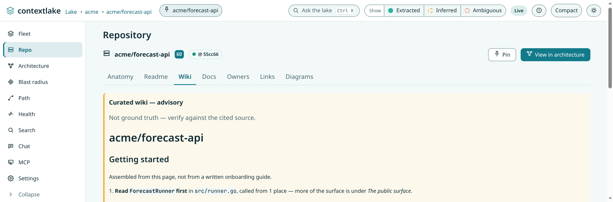
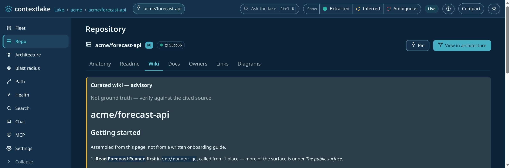

Generate the wiki
Turn the graph into grounded, council-verified prose per repo: searchable, enrichment-aware, with a provenance footer.

The wiki (optional, local-first) turns the graph into prose: a grounded, council-verified Markdown page per repo, with a provenance footer citing the commit and sources it was built from.
flowchart TD
G[("the graph")] -->|"top symbols, dependencies, files,
README excerpt, recorded decisions"| DR["draft the page"]
DR --> SG{"structurally sound?
no model call"}
SG -->|no| X(["nothing is written,
the reason is reported"])
SG -->|yes| C["the verification council,
one review per lens"]
C --> S{"mean score above accept_score?"}
S -->|no| X
S -->|yes| W[("the page, with a
provenance footer")]
W --> P[("the @wiki partition,
embedded and searchable")]
The council can be pointed at a different, usually stronger, backend than the one that drafted the page, which is what makes publishing from a cheap local generator safe.
Running it#
Enable [llm] in the config (generation runs on a local Ollama model by default, prompts never leave the
machine), or skip the toml entirely and pass --llm <provider> (builtin | ollama | openai |
anthropic | cli), for example contextlake kb wiki acme/catalog-api --llm builtin, which enables the tier
inline and scopes generation to the named repo(s).
On a pip install, --llm builtin needs one extra step first, contextlake doctor --fix llm-local
(see Install and upgrade); --llm ollama
needs no compiler at all.
Run contextlake kb wiki: for each repo it synthesizes a Markdown page grounded strictly in graph facts (top
symbols, dependencies, files, and, when the repo's own checkout is available, an excerpt of its README
and which conventional entry-point/config files it has, e.g. package.json, Dockerfile, manage.py)
with a provenance footer citing the commit and sources, then puts the draft through a verification
council, reviewers score it for accuracy, completeness, and clarity and a chairman publishes only pages
above a configurable threshold. Nothing that fails review is written.
By default the council reviews with the same model that wrote the page, so a small local model both drafts and grades its own work, and the tiny built-in 0.5B in particular tends to rubber-stamp almost everything. To gate a cheap local generator with a stronger judge, point the council at its own provider:
[llm]
provider = "builtin" # keep generation local and free
review_provider = "anthropic" # …but have a real model decide what gets published
review_model = "claude-haiku-4-5" # optional; defaults to the provider's own default
review_provider accepts the same values as provider and wins unconditionally, so the inverse split
(generate with a strong model, review with a cheap one) works too. It is strictly opt-in and never
inferred from a stray API key in your environment, because it is not free: a run makes
pages × council_size review calls against that provider (3 lenses per page by default, lower
council_size to 1 to cut it threefold). Note that contextlake doctor checks the generation provider
only, so a missing key for the review provider shows up as a run where every page is rejected with
N reviewer(s) returned nothing parseable rather than as a doctor warning.
How many symbols get sampled into that grounding set scales with the repo's own size:
max(15, min(80, node_count // 1500)), instead of a flat count of 15. Up to 22,500 graph
nodes the floor still keeps it at 15 (no change from before); past that it grows with repo size,
reaching its cap of 80 at around 120,000 nodes, so a large repo's ranked lists (top symbols, hubs,
dispatchers) carry proportionally more grounding depth, bounded so the prompt stays a fixed cost.
Within that sample, top_symbols reserves at least one slot per distinct symbol kind (e.g. a SQL
table node, which has no call edges) so a structurally low-degree kind is never squeezed out
entirely by pure degree-ranking; hubs/dispatchers never do this backfill with a fabricated
zero-count row, since those two carry a real caller/callee count claim. One kind is excluded from
that reservation: a file-less module node is an import/#include target, not a symbol the
repo defines, so it is not handed a guaranteed slot (it still ranks in on its own degree, as a
heavily-included header legitimately does). The provenance footer also states the resulting
coverage as a fact, "Grounded in N/M file-backed symbols (X%)", the count of distinct symbols the
sample actually touched versus the repo's file-backed symbol count. Both sides count file-backed
nodes only, so the ratio means the same thing on a whole-repo page and on one of its per-subsystem
pages, which can structurally contain nothing else.
The page has a fixed section order, Overview, Setup & Run, Architecture, Dependencies, Gotchas,
Decisions, but a section is only ever written when the graph actually has something to ground it:
"Setup & Run" needs a README excerpt or a detected config file, and separately flags when an indexed
file lives under a directory literally named generated/ (e.g. src/generated/widgets.py), so the
model is warned off presenting that file's contents as hand-authored design. (setup_signals also
counts legacy C/C++ project/workspace files such as .vcxproj/.dsp by category, e.g. "3 legacy
MSVC6 project (.dsp) file(s) detected" -- since those extensions aren't part of the indexed
language set and never reach the graph, the count comes from a recursive, bounded scan of the
repo's live checkout, the same way setup_signals already detects package.json/Dockerfile.)
"Gotchas" needs at least one symbol with
real callers in the graph, and states only the caller-count fact ("N caller(s) in the graph, worth
extra care/tests when changed"), the model is explicitly told not to characterize why a symbol
has many callers, so it never invents a label like "foundational" or "critical infrastructure". A
repo with no such signal simply gets fewer sections, never an empty heading. "External context"
(below) is a separate, always-conditional block on top of that list, not
one of the named sections.
For the LLM backends behind this (built-in CPU model, Ollama, OpenAI, Anthropic, or a local agent CLI), see Model providers.
Why a page was rejected#
A rejection always names the rule that fired, because a page that simply fails to appear leaves you staring at a missing file. Two of the reasons come from a structural gate that runs before the council and makes no model call at all:
| Reason | What the draft did |
|---|---|
prompt leakage |
Reproduced one of its own instructions verbatim, so the page describes how it was asked to write rather than the repository. |
degenerate repetition |
Repeated one span over and over, which is what a model that has run out of grounded material tends to emit. |
Both are mechanically visible, so they are decided without asking a reviewer. That is deliberate: a weak model acting as its own council rubber-stamps exactly these defects, which contextlake, explained records with the measurement behind it. Rejecting them early also saves the council's round trips on a page that could not have passed.
Anything else is a council verdict: the mean score across the lenses came in under accept_score,
and the reported issues are the reviewers' own. In every case the page is skipped, not rewritten,
so a rejection costs you that page rather than another round of model calls. Re-run with a stronger
backend, or a stronger reviewer, and it is attempted again from scratch.
Per-subsystem pages for large, federated repos#
A repo with at least 5,000 graph nodes, where no single top-level module owns more than 60% of
them, is treated as genuinely federated, one big source directory doesn't count, but a repo split
into several comparable subsystems does. contextlake kb wiki generates one additional page per
qualifying subsystem automatically, no new flag needed, in addition to (never instead of) the
whole-repo page. Each subsystem page is grounded only in that module's own symbols, files, and
dependencies (a segment-boundary-correct scope, so a module named api never also pulls in a
sibling like apiv2/), and its title, framing, and provenance footer all say plainly that it
covers only that module, not the repository as a whole. Subsystem pages live under
wiki/_modules/ and get their own @wiki:<repo>::<module> partition, so a natural-language
question can land on a subsystem's own explanation, cited back to its own page file.
Generation is capped at the 20 largest qualifying subsystems per run (largest first, by node
count) so one wiki invocation on a very large repo stays bounded, a repo with far more than 20
qualifying subsystems only gets pages for its 20 largest; the rest go unwritten across runs (the
run logs how many were skipped, rather than going silent about it). When subsystem pages exist,
the whole-repo overview page's Architecture section names and briefly describes each one instead
of trying to summarize their internals inline, and points the reader to its dedicated page. The
overview page only picks this up the next time it's actually regenerated, though, a repo already
wiki'd at its current commit has its overview skipped as unchanged (subsystem pages still generate
fresh), so an existing store only gets the naming after its next commit change, or a --force run
(the dashboard's Regenerate button has a force option too).
Searchable prose#
Accepted pages also become searchable prose: each page's sections are stored in an isolated
@wiki:<repo> partition and, when the semantic tier is enabled, embedded alongside the code vectors, so a
natural-language question can land on the wiki's explanation of a subsystem, cited back to the page file
and labeled advisory (kind wiki), never outranking extracted code facts. Pages written before this
existed are backfilled on the next wiki run without any LLM calls.
Each section is also linked to the symbols it names (documented_by), so "where is this function
explained?" is one graph hop from the symbol rather than a text search. Module pages link through the repo
they belong to, so subsystem pages link too; a cluster page spans many repos and so links to none. Only the
symbols get these edges, never the repo as a whole -- a repo's Links panel is for external knowledge
(Jira, Confluence, Figma, GitLab), and a wiki page is contextlake's own output, not a cross-link.
Cluster (namespace) wiki#
Beyond per-repo pages, contextlake kb wiki --namespace acme/payments writes one cluster page for a
whole group of repos (everything under that repo-id prefix), narrating how they fit together: which
services call which over HTTP, publish/consume which events, and share which packages, split into coupling
within the namespace and coupling to repos outside it. Use --namespaces --depth N to generate one
page per namespace at that prefix depth. It grounds strictly in the cross-repo edges the graph already
resolved (no new extraction) and reuses the same review council + provenance footer as the per-repo wiki,
so it stays advisory and cited; when the graph shows no coupling it says so rather than inventing a link.
Cluster pages get the same fixed-section, nothing-invented treatment as per-repo pages, including a
"Gotchas" section when there's a real coupling-risk signal to ground it: the highest-weight internal edges
(busiest cross-repo coupling in the namespace) and the member repos with the most boundary edges
(the ones whose changes are most likely to ripple outside the namespace), both read directly off data the
cluster brief already computes, no new metric. Cluster pages are served over MCP by passing a namespace to
get_wiki, and shown per group in the dashboard's fleet overview.
Incorporating connector enrichment#
When contextlake kb enrich has populated a repo's @enrich:<repo> enrichment documents (via Atlassian or
MCP search sources), the wiki synthesizer draws on them and incorporates an "External context" section
into each repo's curated page. Each external fact is directly quoted from its source (Confluence page,
Jira issue, or MCP search result) and attributed by source URL or name, never presented as a free
assertion or as an undisclosed code fact. The council still gates the enriched page before it is written,
ensuring external context supplements rather than displaces code-backed facts and that attribution is
clear and verifiable.
The result, rendered directly in the dashboard's Wiki tab (no click-through needed): prose grounded strictly in real symbols, with a provenance footer citing the exact commit and source files it was built from, and a STALE badge if the indexed commit has since moved.


With contextlake kb dashboard --serve --allow-mutations, both the per-repo Wiki tab and the fleet-wide
Settings tab also carry a Regenerate button that runs this same command from the browser, in the
background, see The dashboard → Mutating routes.
Recorded decisions#
A repo's own ADR/decision docs (see Index & Code Graph)
are authored facts, not connector content, so they don't need attribution the way "External context"
does: each becomes a "Recorded decisions" section citing the decision's title, file, and body directly.
No enrich/connect step needed, these are picked up automatically whenever the repo is indexed.